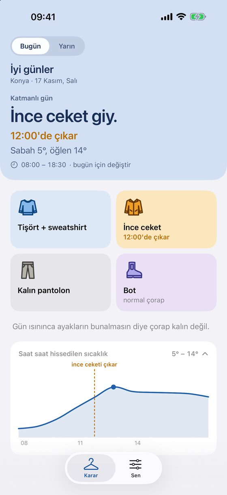
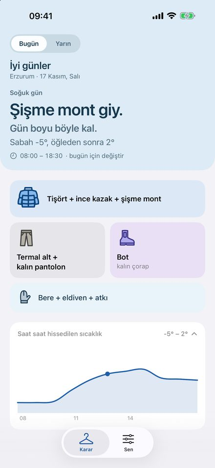
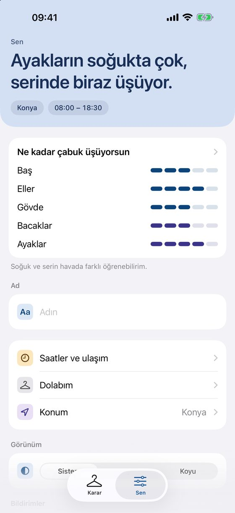

Ayrıntı ve ekranlar
Sabahları havaya bakıp ne giyeceğime karar veremediğim için yaptım.
Dışarıda olacağın saatlerin havasına bakıyor ve tek cümle söylüyor. Akşam üşüyüp üşümediğini söyledikçe ne kadar üşüdüğünü öğreniyor. Hesap yok, her şey telefonunda kalıyor.
İnce ceket giy.
12:00'de çıkar
SwiftUI · WidgetKit · Swift Charts · Open-Meteo
Güne dön ↑

